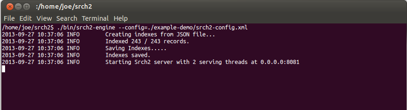
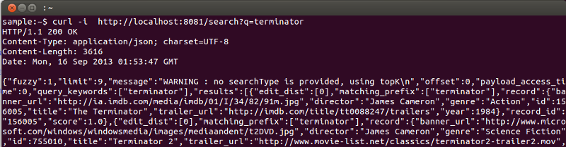
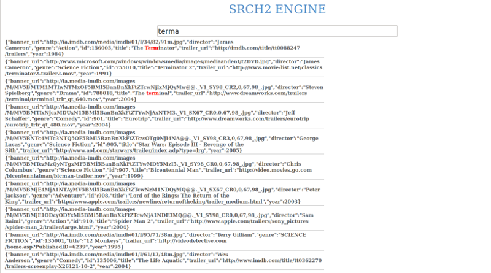
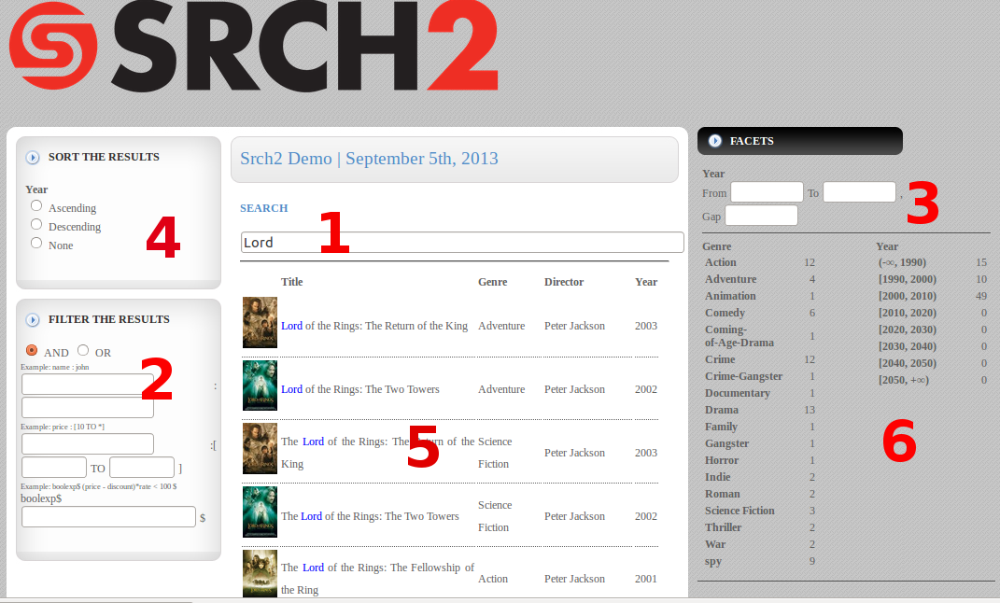

SRCH2 Manual: Engine Installation
This documentation gives step-by-step instructions on how to use the SRCH2 engine to setup a simple search service on movie information. The provided package includes a sample data file with movie records, with information such as title, year, director, and genre. A live demo is available at here.
1. Download and Run Server
Step 1: Download the latest SRCH2 engine from here and unzip it to a folder, e.g., "/home/joe/srch2". The tar ball includes the following files and a folder:
- bin/srch2-engine (the engine binary);
- readme.txt;
- example-demo/.
The "example-demo" folder contains files for a demo, in which we use the engine to build a search service on sample movie information. The folder includes a JSON file, a sample configuration XML file for the engine, and files for two front-end UIs (one basic and one advanced).
Step 2: Obtain a free 30-day trial key by filling in the form. Store the key file locally as "srch2_license_key.txt" into the install directory.
Step 3: Open the file example-demo/srch2-config.xml, and change the variable "srch2Home" to the install folder of the
SRCH2 package, e.g., "/home/joe/srch2".
Step 4: Go to the install folder and run the following:
shell> ./bin/srch2-engine --config-file=./example-demo/srch2-config.xml
The server will read the configuration file, load the data in the corresponding data file, build indexes, and start a RESTful server. You should see a page similar to the following:

Note:
- All the paths in the configuration file are relative to the "srch2Home" variable, so make sure the license file path is relative to "srch2Home", not an absolute path.
- It is recommended to use an absolute path value for the "srch2Home" variable.
- Once the engine starts, it stores the indexes in the folder specified by the "dataDir" parameter in the configuration file (with a default folder called "indexes"). The next time we start the engine, it will check if the folder has index files. If so, the engine will load the index files instead of reading the records from the data source. If we want to force the engine to read the records, make sure to delete the files in the "indexes" folder.
Step 5: To test the engine, open a new terminal and type the following command:
shell> curl -i http://localhost:8081/search?q=terminator
Now you should see the following results:

2. Simple Front-end UI
Use a browser to open the file example-demo/basic/index.html. Type into the search box. After typing a few characters you should see results similar to the following:

3. Advanced Front-end UI
Use the browser to open the file "example-demo/advanced-ui/index.html". Do a search, and you should see a page similar to the following:

The screen has the following regions:
-
It is the main search box;
-
It shows the search results;
-
It allows the user to specify the order in which the results are sorted using the year field;
-
It allows the user to specify filters to post-process results;
-
It allows the user to specify a facet on the year field by providing a start year, an end year, and a year gap;
-
It shows the facet results.
Note: Each time we make changes to some conditions, make sure to move the focus to the search box and move the cursor to reissue the search query to the server in order to see the new results.
|